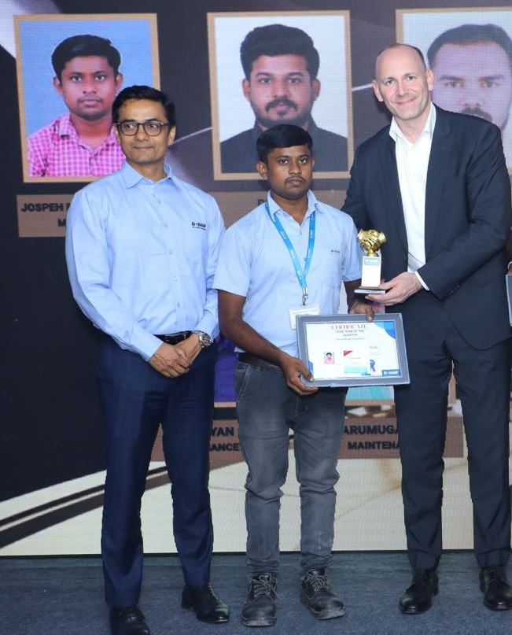
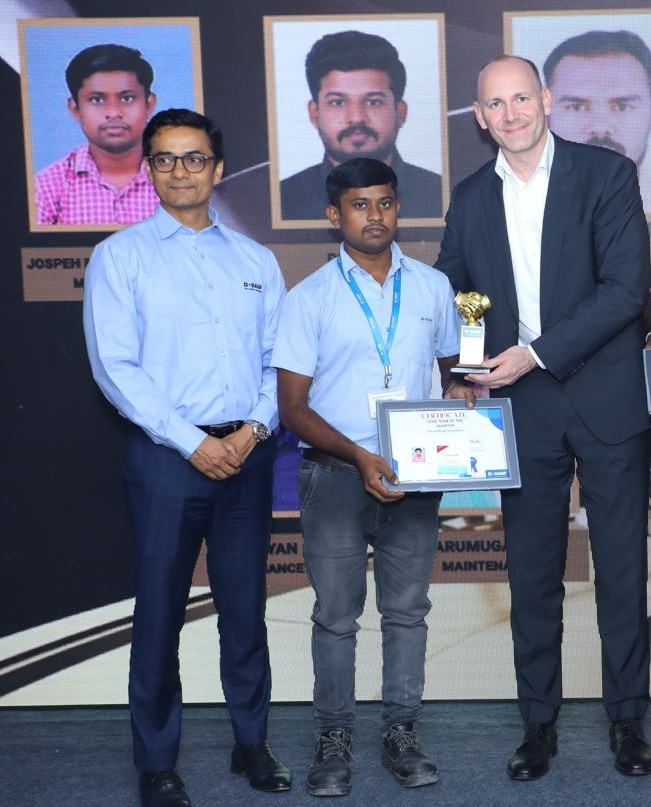

KUKA Robot with Siemens PLC for Pick & Place Application
This project involves the integration of a KUKA robot with a Siemens PLC to develop a fully automated pick and place application. The system is designed to improve efficiency and precision in industrial automation processes, where the robot is responsible for picking up items from a conveyor belt and placing them in designated locations.
- Integrate KUKA robot with Siemens PLC using industry-standard communication protocols.
- Develop and program PLC logic for controlling the pick and place operations.
- Configure and program the KUKA robot for precise movement and item handling.
- Ensure seamless communication between the PLC and the robot for synchronized operations.
- Validate the system performance through thorough testing and troubleshooting.

Key Achievements:
- Successfully integrated KUKA robot with Siemens PLC for synchronized pick and place operations.
- Developed robust PLC logic and robot programming to handle various item types and sizes.
- Achieved high precision and efficiency in the pick and place process.
- Ensured system safety and reliability through comprehensive testing and validation.


 
